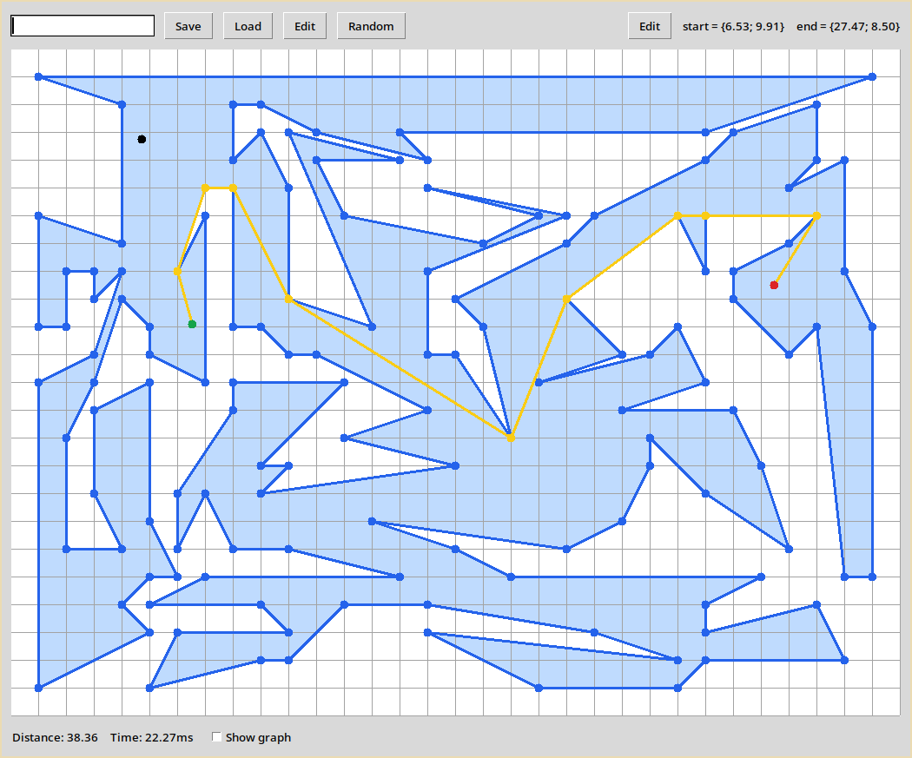
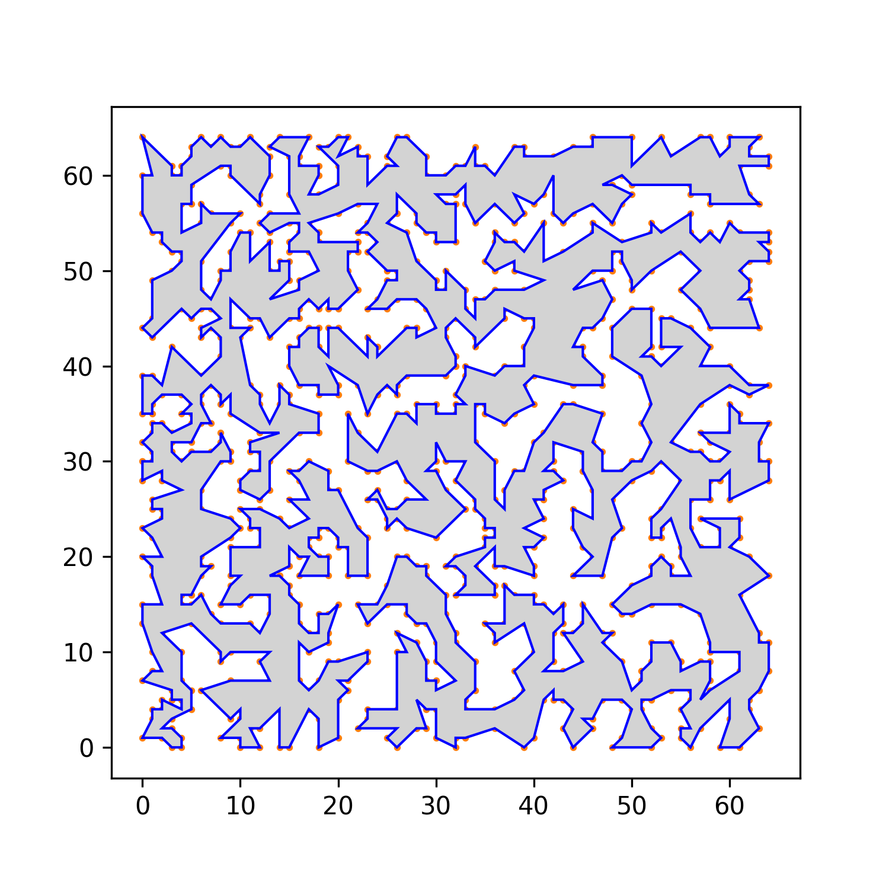

Tìm đường đi ngắn nhất trong đồ thị
Nội dung chính
- Lập trình giao diện
- Bố cục chương trình
- Biểu diễn dữ liệu
- Các thuật toán
- Tham khảo
Xây dựng giao diện
Thư viện Tkinter
- Tkinter là binding python cho bộ công cụ giao diện Tcl/Tk.
- Một số đặc điểm của Tkinter
- Native
- Đa nền tảng
- Hướng đối tượng, dựa trên event-callback
Ưu điểm
Có hệ thống quản lý bố cục đơn giản nhưng mạnh mẽ

Code ngắn gọn, dễ đọc
Có sự đồng nhất với các ứng dụng khác

Nhược điểm
- Có sự khác biệt khi chạy code trên các nền tảng khác nhau
- Ít được đầu tư hơn các thư viện giao diện khác
- Không thích hợp cho các ứng dụng tương tác cao
Bố cục chương trình
Giao diện

Quy trình vẽ
- Tô màu đa giác
- Vẽ lưới tọa độ
- Vẽ đồ thị
- Vẽ viền đa giác
- Vẽ đường đi tìm được
- Vẽ điểm bắt đầu và kết thúc
- Vẽ con trỏ chuột
Biểu diễn dữ liệu
Đơn vị hình học cơ bản
- Điểm: (x, y)
- Đoạn thẳng: (p1, p2)
- Đa giác: [p0, p1, p2, …, pn, p0]
- pi, pi + 1, pi + 2 không được thẳng hàng.
- Đa giác không được tự cắt
Đồ thị
Các thuật toán
Sinh đồ thị
- Tất cả cạnh của đa giác là cạnh của đồ thị
- 2 điểm A, B trên đa giác có cạnh trên đồ thị nếu
- AB không cắt bất kỳ cạnh nào của đa giác
- Trung điểm AB nằm trong đa giác
- Độ phức tạp: O(N3)
Tìm đường (A*)
- Là bản mở rộng của dijkstra
- Sử dụng heuristic
- Thích hợp hơn cho việc tìm khoảng cách giữa 2 điểm
- Độ phức tạp: O(N*logN)
| Dijkstra | A* |
|---|---|
 |
 |
 |
 |
Sinh đa giác
- Tạo tập hợp điểm ngẫu nhiên
- Nối tất cả các điểm sao cho không cặp cạnh nào tự cắt
- Một trong những cách nối là nối sao cho chu vi là ngắn nhất
- ⇒ Trở thành bài toán TSP
- Sử dụng thuật toán 2-opt để ước tính nghiệm
- Độ phức tạp: ~O(N3)


Tham khảo
Tài liệu
- Thông tin cơ bản: https://wikipedia.org/
- Tkinter: http://effbot.org/tkinterbook/ (Đã ngưng hoạt động)
- A*: https://theory.stanford.edu/~amitp/GameProgramming/
Thư viện sử dụng
- Numba: Python compiler sử dụng LLVM. Dùng để tăng tốc độ các phép tính hình học.